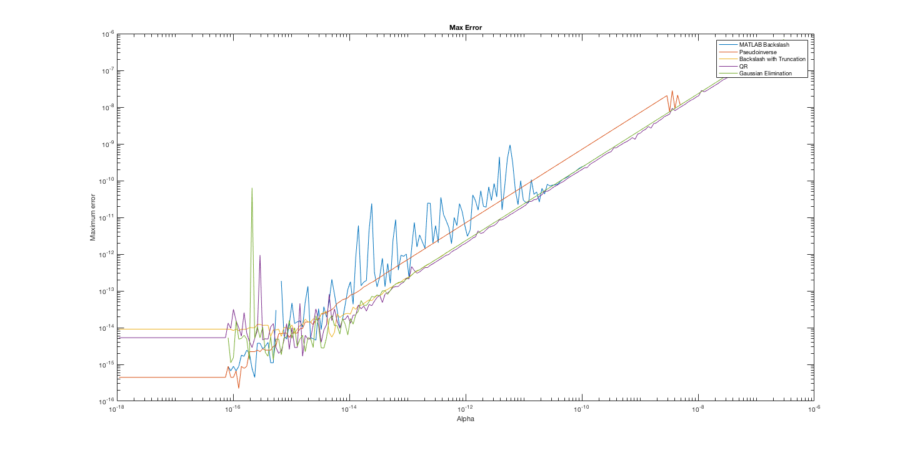

Discussed how to measure order of convergence for time-stepping both ODEs and 1-D PDEs. Discussed lsqminnorm and decomposition MATLAB functions.
- Tasks
- Daniel
- Sage
- Time-Stepping
- References
Tasks
Daniel
- Consolidate code for the Singular PHS Matrix experiment.
- Test QR minimum-norm solution in the Schure Complement Method.
- Test for points projected off of a line instead of projected onto a line.
- Test for points projected off of a circle.
Sage
- Test order of convergence for time-stepping with ODE. (See Experiment 001)
- Test order of convergence for time-stepping with system of ODEs. (see pg 40 of [1])
- Implement RBF-FD on a sphere.
Time-Stepping
Sage had implemented Forward and Backward Euler for the ODE $y^\prime = -\lambda y$, but was unsure how to measure the order of convergence. Grady clarified: decrease $\Delta t$ and step-forward to compare the error ar the same time value. A single time step should be $\mathcal{O}(\Delta t^2)$. If we take $\frac{1}{\Delta t}$ steps or more, the error will be $\mathcal{O}(\Delta t)$.
For the 1-D heat equation $u_t = c^2 u_{xx}$ we discretize in space with step size $h$ then choose a step size in time $\Delta t$. The eigenvalues of the finite difference matrix $$ D = \frac{c^2}{h^2}\begin{bmatrix} -2 & 1 & & & & \\ 1 & -2 & 1 & & & \\ & \ddots & \ddots & \ddots & & \\ & & 1 & -2 & 1 \\ & & & 1 & -2 \end{bmatrix} $$ are given by $\lambda_k = -\frac{4c^2}{h^2}\sin^2( \frac{\pi}{n+1} \frac{k}{2} )$. In order for all eigenvalues to be within the stability domain of forward Euler we require that $\lambda \Delta t \propto h^2$. If we choose $\Delta t = h$ (maybe this should be $\Delta t = h^2$ at each step we expect second order convergence around times near $t = \frac{1}{\Delta t}$.
Singular PHS Matrix Experiment
We discussed Daniel's progress on finding the best method for solving the singular systems that can arise when using PHS RBFs. QR had smaller error than the best methods so far.
References
- J. D. Lambert. Numerical Methods for Ordinary Differential Systems: The Initial Value Problem. John Wiley & Sons, Inc., New York, NY, USA, 1991. ISBN 0-471-92990-5.